Unitat 5: Integració d'Ubuntu en Active Directory i Configuració d'IIS amb Certificats SSL
Introducció
En aquesta pràctica es documenta el procés complet d'integració d'un sistema Ubuntu en un domini d'Active Directory de Windows Server, seguit de la instal·lació i configuració d'IIS (Internet Information Services) amb un lloc web bàsic i la implementació de certificats SSL per a connexions segures HTTPS.
Objectius
- Unir un equip Ubuntu a un domini d'Active Directory
- Configurar l'autenticació d'usuaris del domini en Ubuntu
- Instal·lar i configurar IIS en Windows Server
- Crear un lloc web bàsic
- Configurar certificats SSL per a HTTPS
Part 1: Preparació i Instal·lació de Paquets en Ubuntu
1.1 Actualització del Sistema
Abans de començar, és fonamental actualitzar el sistema Ubuntu:
sudo apt update
1.2 Instal·lació de Paquets Necessaris
Per unir Ubuntu a un domini d'Active Directory, necessitem instal·lar diversos paquets que gestionen l'autenticació i la integració amb el domini:
sudo apt install realmd sssd sssd-tools libnss-sss libpam-sss adcli samba-common-bin oddjob oddjob-mkhomedir packagekit
Descripció dels paquets:
- realmd: Eina per descobrir i unir-se a dominis
- sssd: System Security Services Daemon, gestiona l'autenticació remota
- sssd-tools: Eines addicionals per a SSSD
- libnss-sss: Biblioteca NSS per a SSSD
- libpam-sss: Mòdul PAM per a SSSD
- adcli: Eina de línia de comandes per a Active Directory
- samba-common-bin: Arxius comuns de Samba
- oddjob: Sistema d'execució de tasques
- oddjob-mkhomedir: Crea directoris home automàticament
- packagekit: Framework de gestió de paquets
Addicionalment, instal·lem paquets de Winbind per compatibilitat:
sudo apt install -y winbind libpam-winbind libnss-winbind samba-common-bin
Part 2: Descobriment i Unió al Domini
2.1 Descobriment del Domini
Primer, verifiquem que el domini d'Active Directory és accessible des d'Ubuntu:
sudo realm discover xanax.local
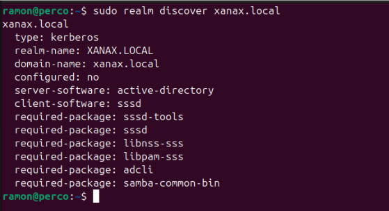
Com es pot observar en la captura, la comanda realm discover mostra informació del domini:
- Tipus: Kerberos
- Nom del realm: XANAX.LOCAL
- Nom del domini: xanax.local
- Software del servidor: active-directory
- Software del client: sssd
- Paquets requerits: sssd-tools, sssd, libnss-sss, libpam-sss, adcli, samba-common-bin
2.2 Configuració de l'Arxiu /etc/hosts
És important configurar correctament l'arxiu /etc/hosts per a la resolució de noms:
sudo nano /etc/hosts
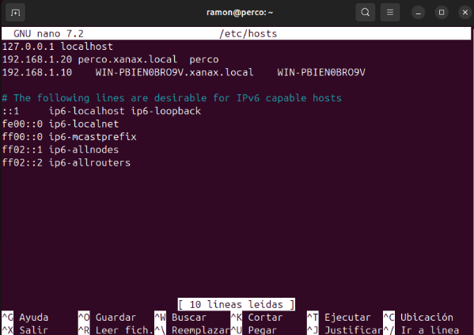
Afegim les següents línies:
127.0.0.1 localhost
192.168.1.20 perco.xanax.local perco
192.168.1.10 WIN-PBIEN0BRO9V.xanax.local WIN-PBIEN0BRO9V
2.3 Configuració de Samba
Editem l'arxiu de configuració de Samba:
sudo nano /etc/samba/smb.conf
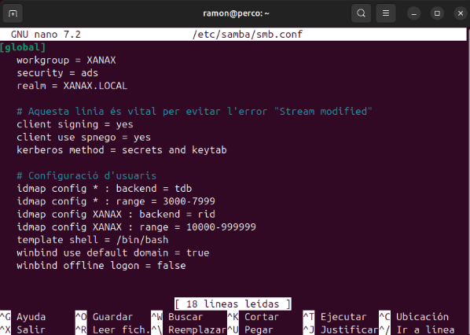
Configuració aplicada:
[global]
workgroup = XANAX
security = ads
realm = XANAX.LOCAL
# Evitar l'error "Stream modified"
client signing = yes
client use spnego = yes
kerberos method = secrets and keytab
# Configuració d'usuaris
idmap config * : backend = tdb
idmap config * : range = 3000-7999
idmap config XANAX : backend = rid
idmap config XANAX : range = 10000-999999
template shell = /bin/bash
winbind use default domain = true
winbind offline logon = false
2.4 Unió al Domini
Executem la comanda per unir l'equip al domini:
sudo net ads join -U Administrador
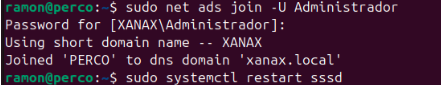
El sistema sol·licita la contrasenya de l'usuari Administrador del domini i confirma:
Using short domain name -- XANAX
Joined 'PERCO' to dns domain 'xanax.local'
2.5 Configuració de PAM
Durant la configuració, se'ns presenta un menú per seleccionar els perfils PAM a habilitar:
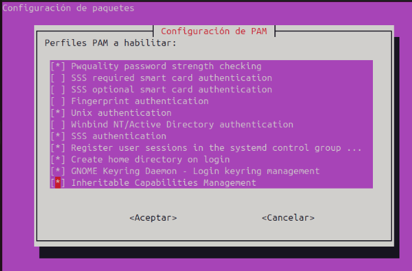
Seleccionem les següents opcions:
- [x] Winbind NT/Active Directory authentication
- [x] Register user sessions in the systemd control group
- [x] Create home directory on login
2.6 Configuració de SSSD
Editem l'arxiu de configuració de SSSD:
sudo nano /etc/sssd/sssd.conf
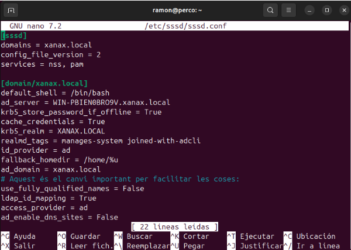
Contingut de l'arxiu:
[sssd]
domains = xanax.local
config_file_version = 2
services = nss, pam
[domain/xanax.local]
default_shell = /bin/bash
ad_server = WIN-PBIEN0BRO9V.xanax.local
krb5_store_password_if_offline = true
cache_credentials = true
krb5_realm = XANAX.LOCAL
realmd_tags = manages-system joined-with-adcli
id_provider = ad
fallback_homedir = /home/%u
ad_domain = xanax.local
use_fully_qualified_names = false
ldap_id_mapping = true
access_provider = ad
ad_enable_dns_sites = false
2.7 Establir Permisos Correctes
És crucial establir els permisos correctes per a l'arxiu de configuració de SSSD:
sudo chmod 600 /etc/sssd/sssd.conf
sudo chown root:root /etc/sssd/sssd.conf
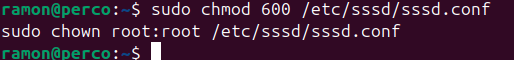
2.8 Verificació de la Unió al Domini
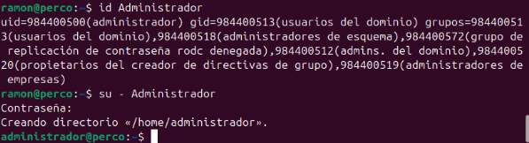
Podem verificar que l'equip s'ha unit correctament al domini des del servidor Windows:
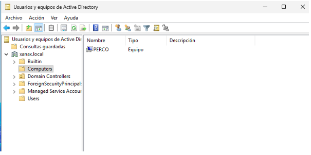
A la consola d'"Usuaris i equips d'Active Directory" podem veure l'equip PERCO llistat en el domini xanax.local.
Part 3: Configuració d'IIS en Windows Server
3.1 Instal·lació d'IIS
Des del servidor Windows, accedim a PowerShell com a Administrador i executem la comanda mostrada:
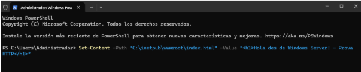
3.2 Creació de Pàgina Web Bàsica
Creem un arxiu HTML bàsic per provar el servidor web:
type C:\inetpub\wwwroot\index.html
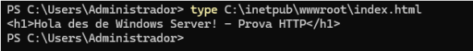
Contingut de l'arxiu:
<h1>Hola des de Windows Server! - Prova HTTP</h1>
3.3 Verificació del Lloc HTTP
Accedim al lloc web mitjançant HTTP per verificar que funciona correctament:
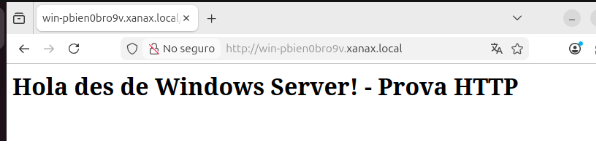
El lloc és accessible a http://win-pbien0bro9v.xanax.local mostrant el missatge "Hola des de Windows Server! - Prova HTTP".
Part 4: Configuració de Certificats SSL
4.1 Instal·lació d'Active Directory Certificate Services
Des de l'Administrador del servidor, afegim el rol de "Serveis de certificats d'Active Directory":
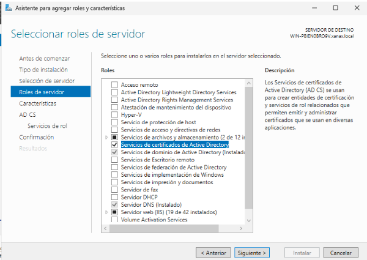
Seleccionem: - ✅ Serveis d'arxius i emmagatzematge iSCSI - ✅ Entitat de certificació
4.2 Selecció de Serveis de Rol
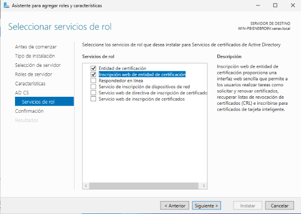
Seleccionem: - ✅ Entitat de certificació - ✅ Inscripció web d'entitat de certificació
4.3 Tipus d'Instal·lació de la CA
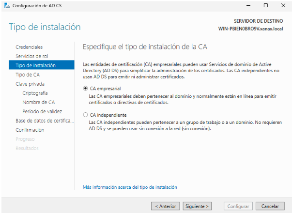
Seleccionem CA empresarial ja que estem integrats amb Active Directory.
4.4 Tipus de CA
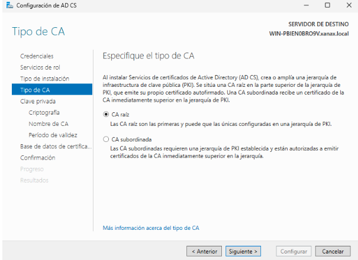
Seleccionem CA arrel per crear una nova jerarquia de certificats.
4.5 Configuració de Clau Privada
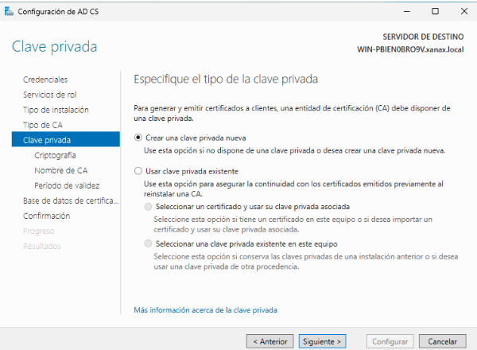
Seleccionem Crear una clau privada nova per generar un nou parell de claus.
4.6 Configuració de Criptografia
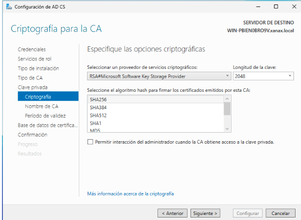
Configurem les opcions criptogràfiques: - Proveïdor: RSA#Microsoft Software Key Storage Provider - Longitud de clau: 2048 - Algoritme hash: SHA256
4.7 Nom de la CA
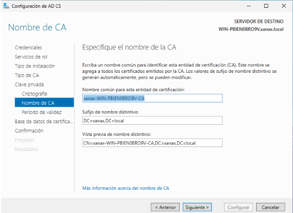
Configurem el nom de l'entitat de certificació: - Nom comú: xanax-WIN-PBIEN0BRO9V-CA - Sufix de nom distintiu: DC=xanax,DC=local - Vista prèvia del nom distintiu: CN=xanax-WIN-PBIEN0BRO9V-CA,DC=xanax,DC=local
4.8 Període de Validesa
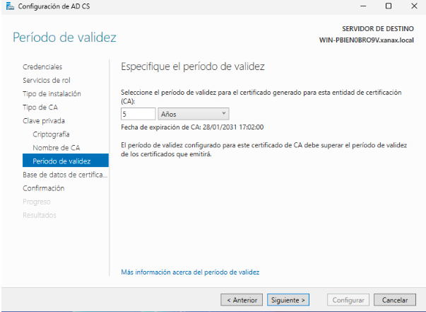
Establim el període de validesa en 5 anys.
4.9 Base de Dades de Certificats
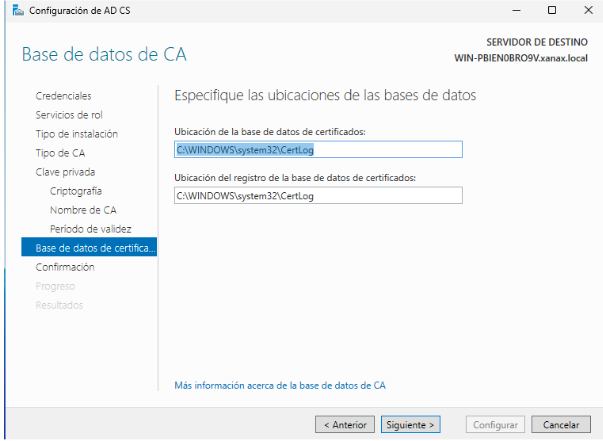
Configurem les ubicacions de les bases de dades: - Ubicació de la base de dades de certificats: C:\WINDOWS\system32\CertLog - Ubicació del registre de la base de dades: C:\WINDOWS\system32\CertLog
4.10 Confirmació d'Instal·lació
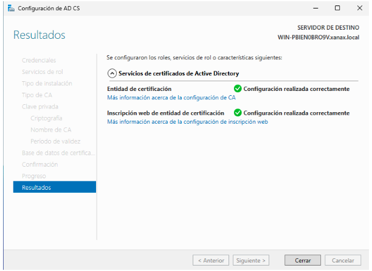
La instal·lació es completa exitosament: - ✅ Entitat de certificació: Configuració realitzada correctament - ✅ Inscripció web d'entitat de certificació: Configuració realitzada correctament
Part 5: Sol·licitud i Configuració del Certificat SSL per a IIS
5.1 Accés a la Consola de Certificats
Obrim la consola d'administració de certificats executant mmc:
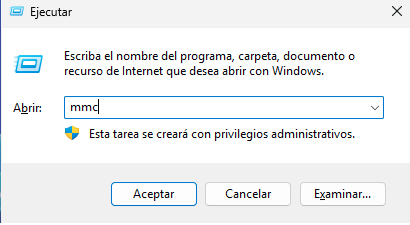
5.2 Afegir Complement de Certificats
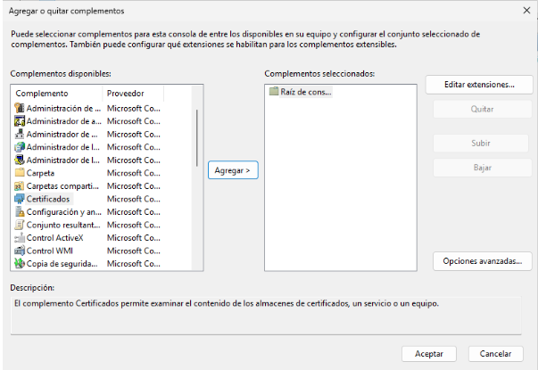
Des del menú, seleccionem "Afegir o eliminar complements" i afegim el complement Certificats.
5.3 Selecció de Compte d'Equip
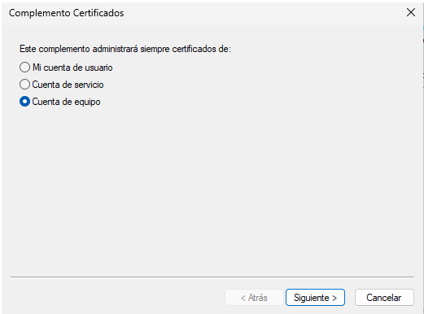
Seleccionem Compte d'equip per administrar certificats de l'equip local.
5.4 Selecció d'Equip Local
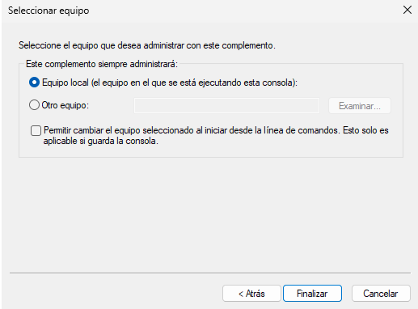
Confirmem que administrarem l'Equip local.
5.5 Consola de Certificats
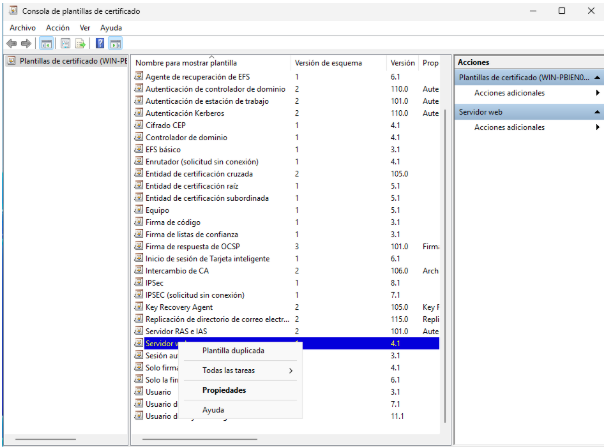
A la consola de certificats, naveguem a: Certificats (equip local) → Personal
Fem clic dret i seleccionem Totes les tasques → Sol·licitar un nou certificat.
5.6 Inici de l'Assistent d'Inscripció
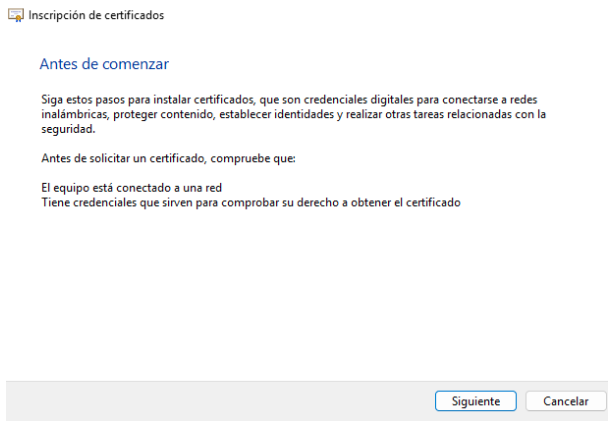
L'assistent d'inscripció de certificats ens guia a través del procés.
5.7 Selecció del Tipus de Certificat
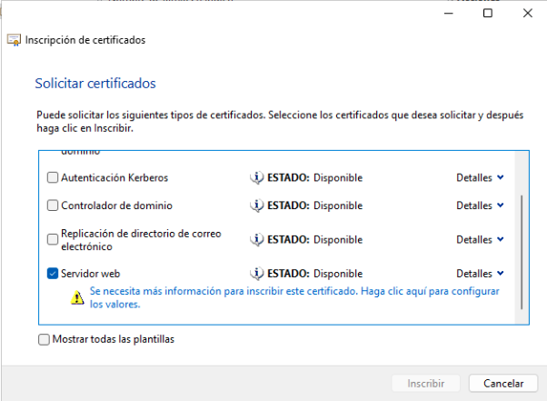
Seleccionem Servidor web i fem clic a "Es necessita més informació per inscriure aquest certificat".
5.8 Configuració del Subjecte del Certificat
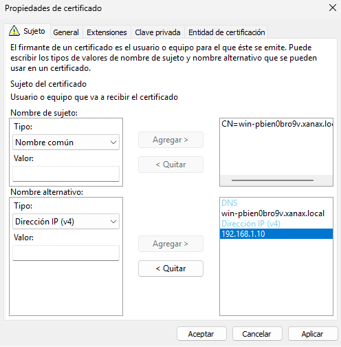
Configurem el subjecte del certificat:
Nom de subjecte:
- Tipus: Nom comú
- Valor: CN=win-pbien0bro9v.xanax.local
Nom alternatiu:
- Tipus: DNS
- Valors:
- win-pbien0bro9v.xanax.local
- 192.168.1.10
5.9 Resultat de la Inscripció
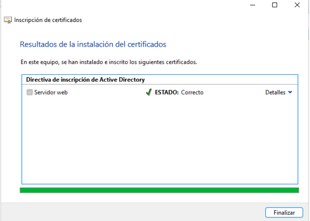
El certificat s'instal·la correctament: - ✅ Servidor web: ESTAT: Correcte
Part 6: Configuració de Permisos en IIS
6.1 Configuració de Permisos de Servidor Web
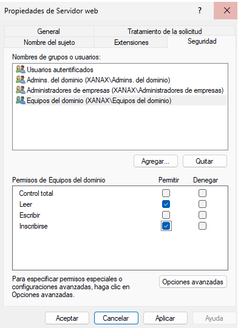
Des de les propietats del servidor web, configurem els permisos per als grups del domini:
Noms de grups o usuaris: - Usuaris autenticats - Admins. del domini (XANAX\Admins. del domini) - Administradors d'empreses (XANAX\Administradors d'empreses) - Equips del domini (XANAX\Equips del domini)
Permisos d'Equips del domini: - ☐ Control total - ☑ Llegir - ☑ Escriure - ☑ Inscriure's
6.2 Configuració de Permisos per a Entitats de Seguretat
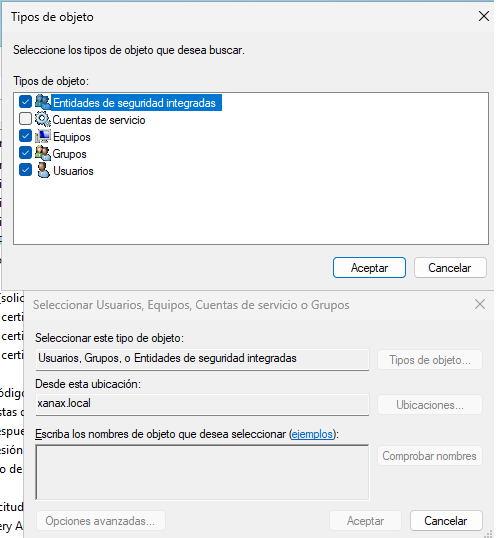
Seleccionem el tipus d'objecte: - ✅ Entitats de seguretat integrades - ☐ Comptes de servei - ☐ Grups - ☐ Grups
Des de la ubicació: xanax.local
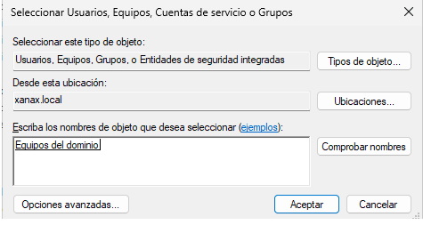
Escrivim "Equips del domini" per afegir aquest grup de seguretat.
Part 7: Configuració d'HTTPS en IIS
7.1 Accés a l'Administrador d'IIS
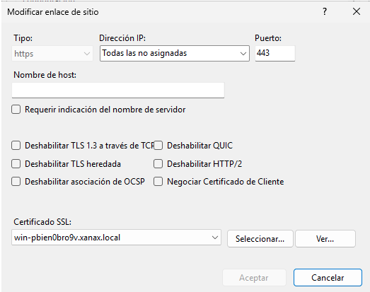
Obrim l'Administrador d'Internet Information Services (IIS).
7.2 Modificar Enllaç del Lloc
Seleccionem el lloc web i fem clic a "Modificar lloc" → "Enllaços":
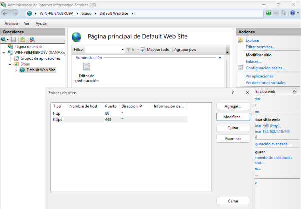
Configurem l'enllaç HTTPS: - Tipus: https - Adreça IP: Totes les no assignades - Port: 443 - Certificat SSL: win-pbien0bro9v.xanax.local
7.3 Verificació del Lloc HTTPS
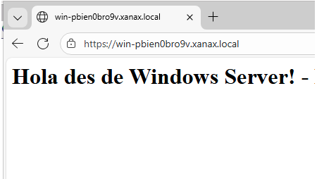
Accedim al lloc mitjançant HTTPS: https://win-pbien0bro9v.xanax.local
El lloc web ara és accessible de forma segura mostrant el missatge: "Hola des de Windows Server! -"